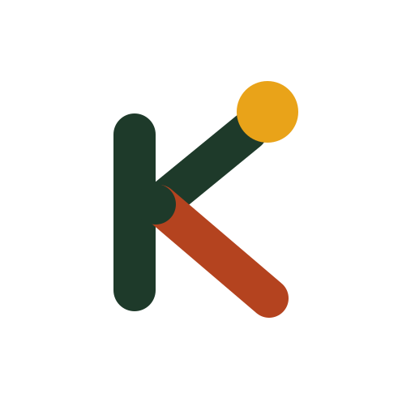

Three directions with no Bitcoin symbol and no lake imagery — no waves, no water, no sunset-over-the-lake, no boat. The identity moves from water to land: Kisumu's rocks, trees, and people, with learning at the centre.
The balancing rocks of Kit Mikayi, the landmark every local knows, drawn as three stacked stones with the sun rising behind them. The whole formation stands on an open book: knowledge is the foundation everything balances on. Two birds mark it as a dawn on land, not a sunset on water.
Reads as heritage and permanence. Best for trust with local partners, schools, and county institutions.
A flat-top acacia, the tree communities gather under. Its trunk is a learner with raised arms; its roots feed directly into an open book; gold fruits in the canopy are ideas ripening. Education as something grown together, not handed down.
Reads as community and growth. Best for cohorts, youth programs, and storytelling.

A bold geometric K for Kisumu. The upper arm reaches up and holds the sun of knowledge; the lower leg is a clay path, grounded in home soil — dala is Dholuo for home, Kisumu's nickname. Two strokes, two journeys: aspiration and roots.
Reads as modern and confident. Best for merch, social avatars, stickers, and small sizes — the simplest silhouette of the three.
| A. Kit Mikayi | B. Learning Tree | C. Dala K | |
|---|---|---|---|
| Story | Landmark + book | Community + growth | Monogram + sun |
| Feeling | Heritage, trust | Warmth, togetherness | Modern, bold |
| Small sizes | Good | Fair (fine detail) | Excellent |
| Merch | Good | Good | Excellent |